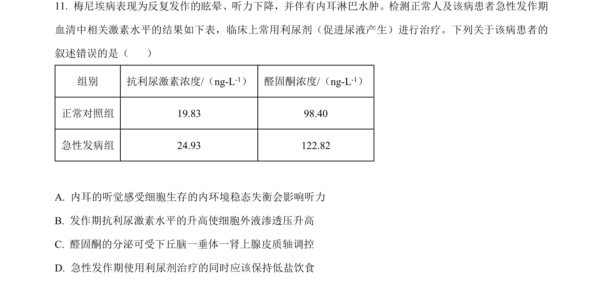
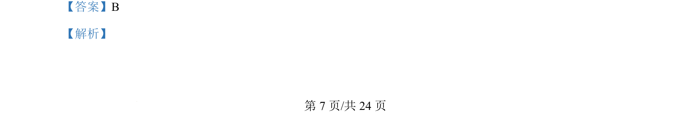
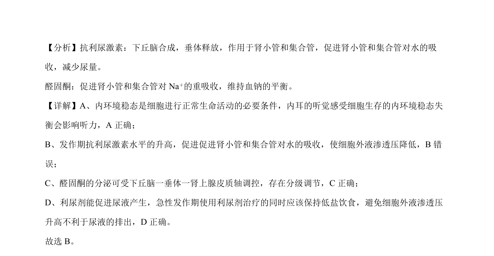

考点：内环境稳态 抗利尿激素 醛固酮 水盐平衡调节
内环境稳态
抗利尿激素
醛固酮
水盐平衡调节

该题考查抗利尿激素与醛固酮的生理作用及水盐平衡调节，判断相关叙述正误。


📄 原 PDF 第 7 页：素材/真题/吉林/2008-2024·（吉林）生物高考真题/2024年高考生物试卷（辽宁）（解析卷）.pdf
素材/真题/吉林/2008-2024·（吉林）生物高考真题/2024年高考生物试卷（辽宁）（解析卷）.pdf